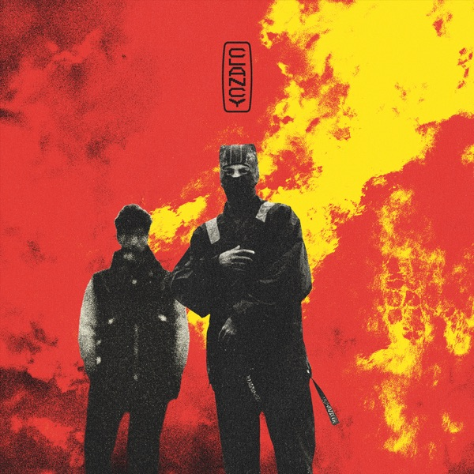
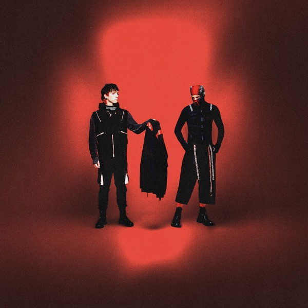
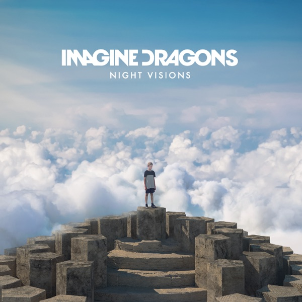
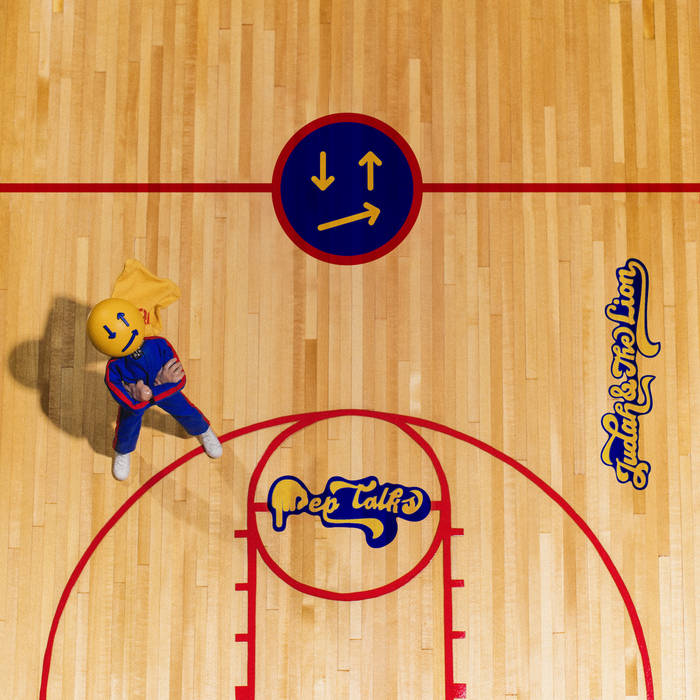
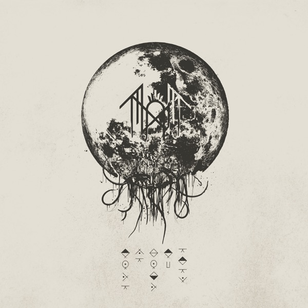
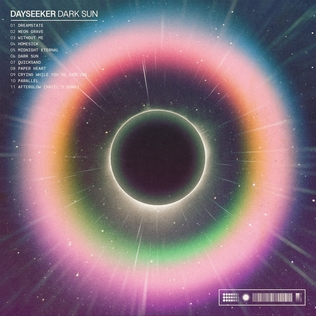
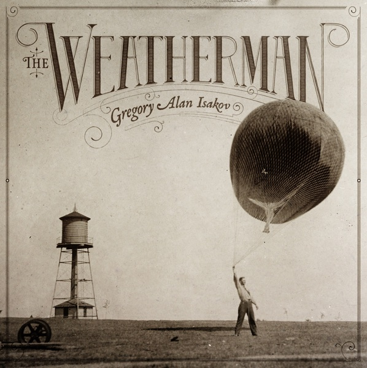
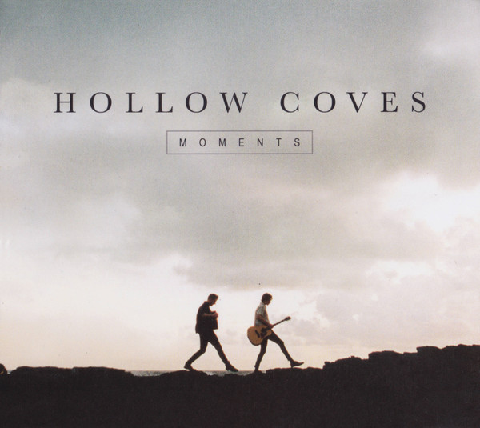
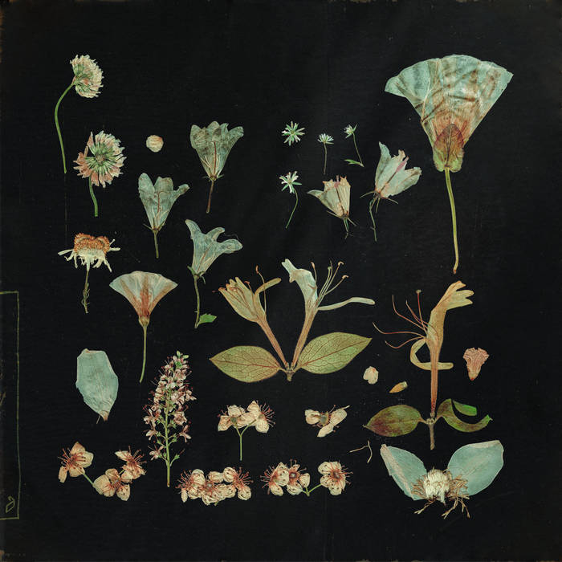
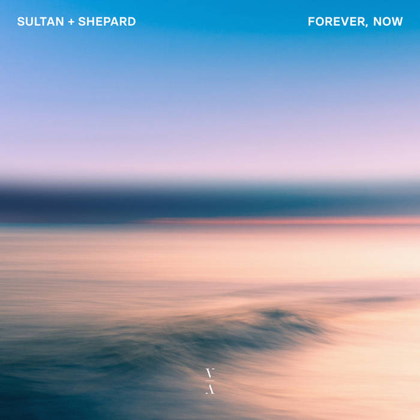

Contact Me
Contact Me
My Favourite Albums

Clancy
Clancy was released while I was on my mission in Brazil and I had to wait 18 months before I was able to listen to it, which was very unfortunate. So Clancy was the album I most anticipated in my entire life. When I finally was able to listen to Clancy it became one of my favorite albums. It has one of the coolest openers with Overcompensate, lots of various vibes between Next Semester, Routines in the Night, and Oldies Station, and ended with one of the most amazing last songs in an album, Paladin Straight. The album also does a perfect job of relating to how I felt returning home from my mission.

Breach
Breach came out of left field, they announced it only a few months before it came out and I was so excited. This would be the last album in the storyline that twenty one pilots has been telling for over the past 10+ years. City Walls was an absolutely amazing song, and music video, that wrapped up this story so well. The rest of the songs reminded me of Clancy but still unique in their own way, there was almost like an oldies vibe to some of their songs. RAWFEAR quickly became one of my favorite songs ever and the rest of the soundtrack is also really good and the overall album was a satisfying conclusion to the story and for now their music and shows.

Night Visions
Night Visions was the first album I ever really listened to and liked as a kid. It's when I first discovered what an album was, and artists as well. Radioactive was the first song I really liked, and once I discovered that there were other songs like it blew my tiny mind away and I was so excited to listen to them. Since 2014 it's always been one of my favorite albums and takes me back to my childhood. It's also one of my favorite genres of music and perfectly captures my taste, with songs like Round and Round, Nothing Left To Say, America, and Bleeding Out.

Pep Talks
Pep Talks is a great album because there is a very positive and upbeat vibe to the album, however the lyrics at times are not as positive and talk about a variety of topics and about going through a quarter-life crisis. Despite some of the more somber lyrics their songs are still very groovy and good to listen to when I just want some good banger music to listen to while driving, cleaning, or playing video games.

Take Me Back to Eden
Sleep Token is just absolutely amazing. Vessel and II do such a great job throughout the entire album of making a beautiful piece of art. Chokehold is also one of the best openers to any album and then it's followed by The Summoning which in live versions, II plays the greatest drum solo ever. The rest of the album has various different vibes from DYWTYLM, Aqua Regia, and Vore. Then it ends with Euclid which is not only a great song but the ending of it calls back to their first song from their first album and it is such a cool full circle they do. It is also just an amazing rock album.

Dark Sun
One day I had a close friend of mine that sent me an album and he said, "Hey Sparky, I think you'll really like this album", and he was so right. One reason I love this album is because there are some moments where they go into half time and it goes so hard. It's also an album that captures my favorite type of alternative/rock that I love.

The Weatherman
One of my favorite genres of music is more mellow stuff like Folk, Singer/Songwriter, or acoustic music. The Weatherman is an album that very much captures this taste I have. The songs are very relaxing to listen to and I often listen to this album while I am skiing and moving side to side down the hill. I also love folk songs that are in 3/4 or 6/8 and there are a few of them in this album. Overall this album has a very peaceful vibe I love to listen to whenever I like to feel at peace and in the moment.

Moments
This is my favorite album by Hollow Coves, which was hard to choose because they are one of the few artists where I like just about every single song they have. Very similarly to The Weatherman, this is just a very relaxing album but a bit more upbeat. Like the feeling of summer vacation where I don't have to worry about 90% of the things that worry me. It's an album with a very happy vibe to it and reminds me of the halcyon times of my life.

When The Quiet Comes
The last genre of music I really like is a mixture of a specific kind of EDM, house, dance, and electronic music. There's two main types I like and this album captures one of those. I really like this kind of electronic music where there's no lyrics and just cool sounds. It's the kind of stuff I call 'imbounious' (which is a word me and my friends made up), which means it can mean whatever I want it to mean. If I'm happy, sad, mad, or just relaxing, it's music I can listen to and be in the moment and in my emotions. It's just a really cool and well put together album with sounds I really like in electronic music.

Forever, Now
Forever, Now is the other kind of electronic music I really like which is more energetic but still has some very pretty aspects to it. Sirens and Forever, Now (the last song in the album) are great examples of these kinds of songs. They have melodies and sounds that I really love and can be a lot more energetic. For example it has one of the few electronic songs I like that's written in 3/4 or 6/8, most are in 4/4 and have a steady bass going the entire time. But the ones in 3/4 or 6/8 have a bit more percussive variety to them. This album also came out right before I left on my mission and reminds me of my last full summer I had in my old neighborhood with all of my friends and driving around Utah and Salt Lake valley doing drywall.